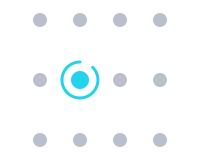

Projects

OpenVole
The self-hosted agent OS — I'm the creator and maintainer. Run a fleet of AI agents on your own hardware, against any model, from one dashboard; peer-to-peer networked, nothing phones home.

AWARE
Research on identifiable computational units (caps) for AI. Current paper: cap-augmented transformers achieve a 51% perplexity reduction over a matched-size baseline on TinyStories. Long-term direction: identifiable, self-evolving architectures.

limnx
The Limnx kernel - A small, hackable Unix-like OS for x86_64 and ARM64.